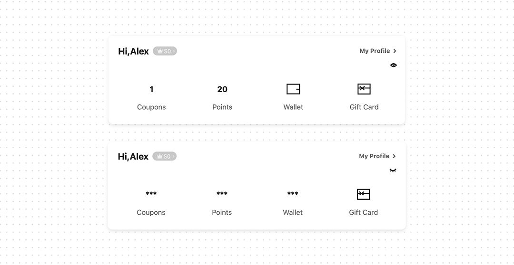
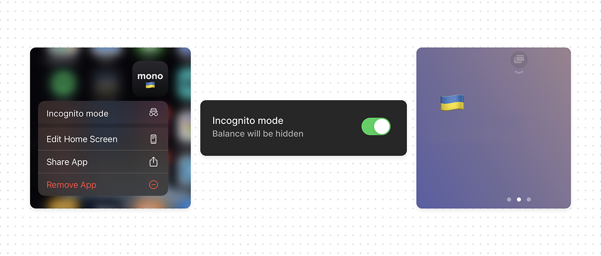

Designing incognito mode to prevent shoulder surfing

You can have Face ID, passkeys, step-up authentication, and all the right security controls. And still expose someone’s bank balance to the person sitting next to them on the train.
This is shoulder surfing – when someone gets sensitive information simply by looking at your screen. For financial products, this can be a balance, transaction amount, account number, or investment portfolio. For health products, it can be a diagnosis, medication, test result, or treatment information.
The user shouldn’t have to cover the screen with their hand every time they open the app in public. Give them a Privacy Mode. Make it simple, tap to hide, tap again to reveal. Users don’t want to go through Settings to hide sensitive information every time.
What good UX looks like
- Hide sensitive information, not the entire interface. Users should still be able to navigate and use the product.
- Keep the control close to the data. Don’t bury a frequently used privacy action in Settings.
- Think beyond finance. The same pattern applies to health, legal, HR, dating, and any product where what’s on screen is private.


Bottom line
Face ID and passkeys stop the wrong person from getting in. They can’t stop the right person’s screen from being read over their shoulder. If your product shows sensitive information, give users a fast, one-tap way to hide it – without breaking the rest of the experience.
Shoulder surfing is a form of physical information disclosure. Unlike a remote attack, it doesn’t require compromising the account, bypassing authentication, or exploiting a vulnerability, the attacker simply observes data that the application renders on the screen.
A bank balance, transaction amount, medical result, or account identifier can become useful context for targeted social engineering or other attacks. Even when the exposed information is not enough to compromise an account by itself, it can still violate the user’s confidentiality.
This is why authentication alone is not enough. Access control protects who can enter the product; privacy controls also need to protect what can be exposed once the product is open.